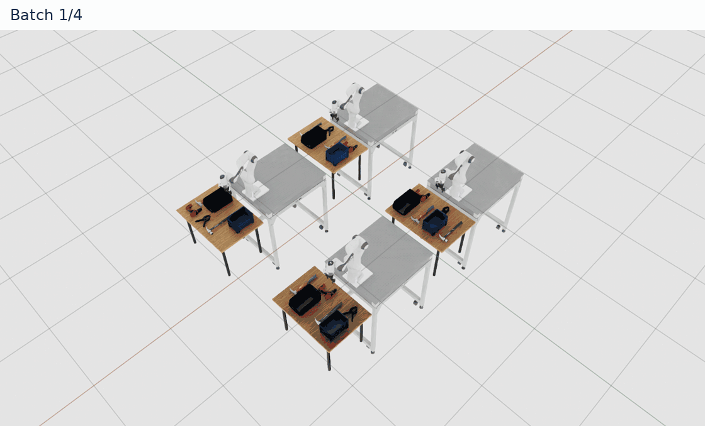
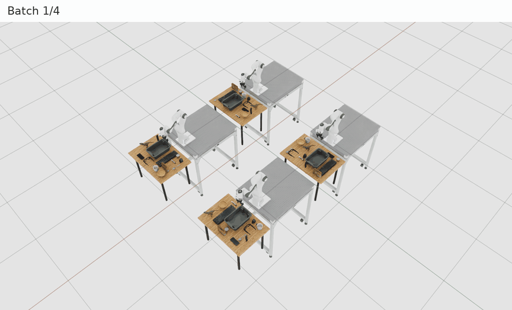
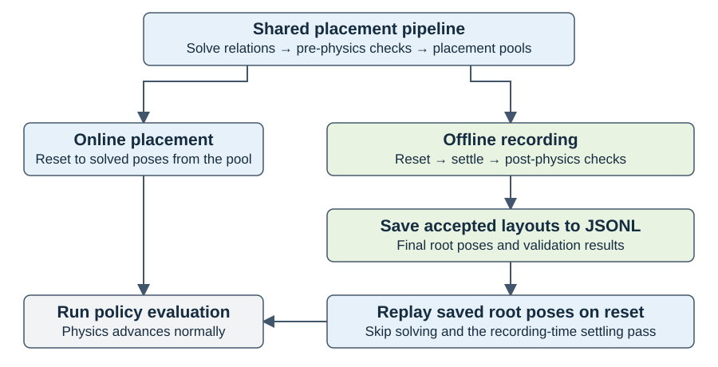
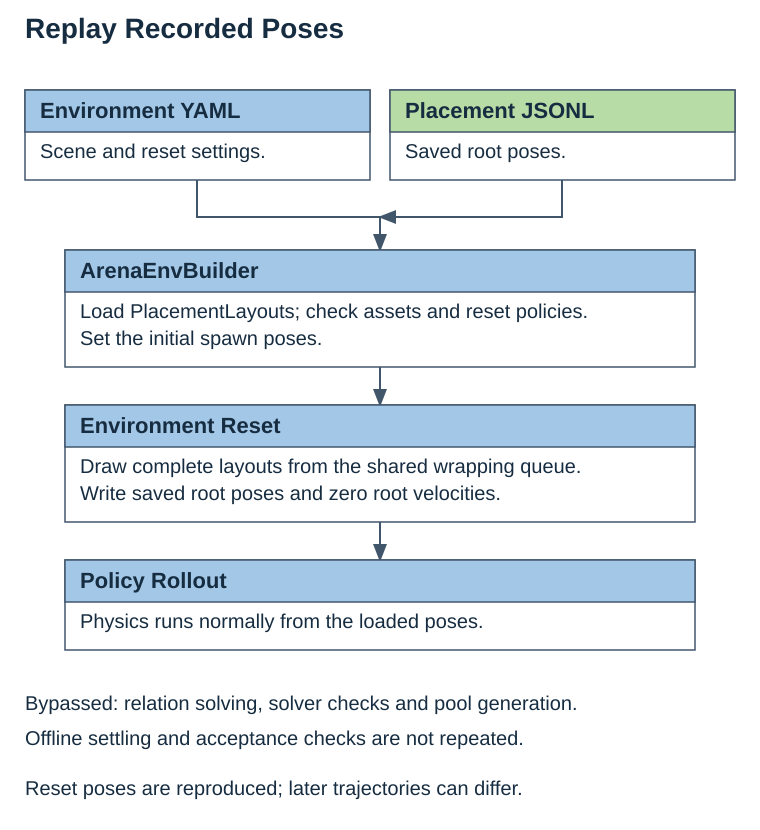

Record and Replay Placement Poses#
Use record_placement_layouts.py to prepare reusable initial poses before
policy evaluation. It solves placement relations, advances physics, and records
the final poses of accepted layouts. Replay loads those poses on reset without
solving or settling them again.
Each batch resets every environment to one solved layout. layouts_per_env
sets the number of batches; four environments and four batches produce 16 attempts.
The examples use the existing Robolab environments with visualization enabled:
clamp_in_right_bin for recording and replay, and smartphone_in_bin for rejection.
Sampling Workflow#
1. Record Placement Layouts#
This example records settled placement layouts from the clamp_in_right_bin
environment.
Complete Installation using native uv or Docker.
For an installed native uv environment, activate it from the repository root:
source .venv/bin/activate
For Docker, use the Arena container shell prepared during installation.
Run the following commands from the repository root in your chosen environment;
python uses the configured Arena interpreter in either workflow. To run headless,
use render=false --viz none when recording and --viz none when replaying.
JSONL recordings can be replayed in another native or Docker installation with compatible assets, physics-root names and reset settings.
python isaaclab_arena/scripts/record_placement_layouts.py \
env_spec=isaaclab_arena_environments/robolab/tasks/clamp_in_right_bin.yaml \
output=outputs/placements/clamp.jsonl \
num_envs=4 env_spacing=2 layouts_per_env=4 seed=42 \
'viewer_eye=[4.0,4.0,6.3]' 'viewer_lookat=[0.6,0.6,0.3]' \
settle.num_steps=120 \
settle.validators.pose_shift.max_translation_m=0.015 \
render=true --device cpu --viz kit
You should see four environments reset and settle over four batches. Recording is successful when:
the command exits without error and writes
outputs/placements/clamp.jsonlwith at leastsettle.min_layoutsaccepted layouts (default 1);the file contains one complete layout per line, and its line count matches the reported accepted count;
every saved layout passes all required solver checks and all enabled, applicable post-physics checks at the configured limits.
Partial acceptance is successful when these conditions hold. Counts and measured motion can differ between machines. Rejected layouts must be excluded from the file and have a reason in the console.
These environments use about 1 cm of On release clearance. This exceeds the
recorder’s default 2 mm shift limit. The commands explicitly allow 15 mm of root
translation. Rotation limits remain 2 degrees and root-speed limits remain
0.1 m/s and 0.1 rad/s. These are example settings, not changed defaults;
use limits appropriate to the accuracy needed by your evaluation.
See Supported Use Cases and Limits for robot-motion and joint-state limitations.
The PickAndPlaceTask default camera looks at the pickup object’s initial
position in the first environment, with an eye offset of [-1.5, -1.5, 1.5] meters.
The optional viewer_eye and viewer_lookat values frame all four environments
in simulation-world coordinates. Set both, or omit both to keep the task’s view.
The command sets settle.num_steps=120 environment steps. Arena’s default
decimation=8 supplies eight physics substeps per environment step, giving
960 physics steps per settling batch.
The clamp_in_right_bin environment varies object positions without randomizing
tool orientations and has a small initial drop. Each reset also runs the Droid
embodiment’s configured robot-joint reset event. The console prints enabled checks
and their settings, physics-step progress, and acceptance counts per batch.
If every layout in a batch fails solver validation, physics is skipped and no
physics-progress lines appear.


The GIF shows excerpts from the four settling batches. The console shows progress and batch results in this format. Values in angle brackets come from your run:
[placement] 480/960 physics steps
[placement] batch 1/4: 4 solutions, <solver_passed> passed solver validation, <physics_passed> passed post-physics validation; overall 4/16 validated, <accepted> accepted
...
[placement] batch 4/4: 4 solutions, <solver_passed> passed solver validation, <physics_passed> passed post-physics validation; overall 16/16 validated, <accepted> accepted
Saved <accepted>/16 accepted layouts: outputs/placements/clamp.jsonl
An existing output file is never overwritten; choose a new path for each recording.
To compare repeated sampling, rerun with
output=outputs/placements/clamp_repeat.jsonl and keep all other settings,
assets and runtime unchanged. Investigate changes in acceptance counts or failed
checks using both runs’ commands, logs and JSONL files. No accepted-count tolerance
is established.
2. Inspect the Saved Poses#
wc -l outputs/placements/clamp.jsonl
head -n 1 outputs/placements/clamp.jsonl | python -m json.tool
The line count must match the recorder’s accepted count. The second command shows
only the first record as a format example; it does not validate the whole file.
source, poses and validation are fields inside
variations["scene.relation_placement"]. Check that:
sourceis"settled";posescontains physics-root names, includingspring_clamp, the bins androbot;positions and quaternions contain finite numbers;
physics_settledandpose_shiftinvalidation.post_physicshavepassed: trueand the settings shown above;articulation_link_shifthaspassed: nullbecause no articulated task objects were selected. Robot joints are excluded from this check.
Positions are in meters in the local environment frame; quaternions are XYZW.
validation.pre_physics holds the solver verdicts for the initial candidate.
validation.sampling records the physics duration and embodiment_keys excluded
from link-shift checks.
3. Replay the Accepted Layouts#
The following Experiment Definition reuses
clamp_in_right_bin and the saved JSONL:
runs:
clamp_replay:
environment:
type: isaaclab_arena_environments/robolab/tasks/clamp_in_right_bin.yaml
environment_builder:
num_envs: 1
presets: PHYSX
placement_layouts_path: outputs/placements/clamp.jsonl
policy:
type: zero_action
rollout_limit:
num_episodes: 3
python isaaclab_arena/evaluation/experiment_runner.py \
--experiment_config isaaclab_arena_environments/experiment_configs/settled_placement_replay_experiment.yaml \
--device cpu --viz kit \
--output_base_dir outputs/placements/evaluation
The command should exit without error and write these files under
outputs/placements/evaluation/<timestamp>/:
index.html: the evaluation report to open in a browser.arena_experiment_result.json: the Run result, withclamp_replaymarkedcompleted.clamp_replay/episode_results_rebuild0.jsonl: three completed episode records.
Task success is not expected with the zero-action policy. Completed episodes confirm execution; they do not measure whether reset poses match the input file.
For another recording, copy the Experiment Definition and edit its
environment.type and environment_builder.placement_layouts_path together
inside the Run. Pass the copy to --experiment_config; the environment YAML
and JSONL paths are relative to the repository root.
With one environment, each reset loads the next record and wraps after the last one. Restarting the command starts from the first record. Later motion depends on the simulation and policy, so it does not by itself show a replay error.
See Relations and Strategies for parallel and partial-reset selection.
4. Check Rejected Placement Layouts#
Generate and record poses in the smartphone_in_bin environment:
python isaaclab_arena/scripts/record_placement_layouts.py \
env_spec=isaaclab_arena_environments/robolab/tasks/smartphone_in_bin.yaml \
output=outputs/placements/smartphone.jsonl \
num_envs=4 env_spacing=2 layouts_per_env=4 seed=42 \
'viewer_eye=[4.0,4.0,6.3]' 'viewer_lookat=[0.6,0.6,0.3]' \
settle.num_steps=120 \
settle.validators.pose_shift.max_translation_m=0.015 \
render=true --device cpu --viz kit
Layouts that fail a required solver check or an enabled, applicable post-physics
check are excluded from the file and reported with a rejection reason.
If fewer than settle.min_layouts pass, expect an insufficient-acceptance error
and no output file; otherwise, the success conditions from step 1 apply.
Use Understand the Rejection Summary to diagnose failures. If every layout passes,
recording succeeded but rejection handling was not exercised.


This run prints the same progress and batch summaries, followed by any rejection reasons. For example, a mouse pose-shift rejection has this format; values in angle brackets come from your run:
[placement] 480/960 physics steps
[placement] batch 1/4: 4 solutions, <solver_passed> passed solver validation, <physics_passed> passed post-physics validation; overall 4/16 validated, <accepted> accepted
...
[placement] batch 4/4: 4 solutions, <solver_passed> passed solver validation, <physics_passed> passed post-physics validation; overall 16/16 validated, <accepted> accepted
Rejected <count>: pose_shift: computer_mouse: moved <distance> m and rotated <angle> deg; limits 0.015 m, 2 deg
The mouse’s layout is rejected when its translation exceeds 0.015 m or its rotation exceeds 2 degrees. Other layouts can still pass. If too few pass, the command ends with:
AssertionError: Accepted <accepted> layouts; need 1. Rejections: {...}
Understand the Rejection Summary#
Each Rejected line gives a reason and the number of layouts rejected for it.
When a pose-shift limit is exceeded, the message includes the object, measured
translation and rotation, and configured limits. Use the named
check to decide what to adjust:
Rejection |
Meaning |
What to check or change |
|---|---|---|
|
A layout failed a required solver check. |
Read earlier solver diagnostics and check relation constraints and collision geometry. Increasing settling time cannot fix a solver failure. |
|
Final root velocity is too high. |
Inspect contacts and support. Increase |
|
A root moved or rotated beyond its limits. |
Inspect the named object. For |
|
A task-object link shifted relative to its root. |
Check joint initialization and contacts. A root-pose recording cannot preserve the changed joint configuration. |
|
A required pre-physics result is unavailable. |
Enable the required validator or fix its dependencies and source configuration; do not remove a required check to obtain a recording. |
See Relations and Strategies for relation settings. Change validation
limits under settle.validators only when the new tolerance fits your evaluation.
Increasing layouts_per_env samples more candidates; it does not make rejected
layouts valid.
Acceptance and Limitations#
All required solver checks and enabled, applicable post-physics checks must pass. The post-physics checks share one settling pass:
Check |
Measures |
Default limit |
|---|---|---|
|
Final linear and angular speed of every root, including the robot. |
0.1 m/s and 0.1 rad/s |
|
Initial-to-final translation and rotation of every root. |
2 mm and 2 degrees |
|
Task-object link motion relative to its root; excludes robot embodiments. |
2 mm and 2 degrees |
Configure settle.validators.<check>.<setting> to change a limit.
An inapplicable or disabled check is recorded as skipped, not passed; at least
one applicable post-physics check must remain enabled.
Use case or setting |
Support and limitations |
|---|---|
Rigid and articulation roots |
Supported with writable roots, enabled pose resets, fixed root-reset poses and zero initial velocity. Replay restores root poses and zero root velocity. |
Object sets; |
Unsupported for recording. Resolve sets to concrete assets and remove the pose modifier before recording. |
Randomized or per-environment root-reset poses |
Unsupported. Additional pose-changing variations and callbacks must also be disabled for exact root replay. |
Robot motion and joint state |
The robot is not frozen and may push objects. Only roots are recorded; robot joints are not acceptance-checked and use their configured resets during replay. The Droid examples randomize joint positions on reset. |
Articulated task objects |
Link checks compare initial and final poses, not joint speeds or continuous stillness. Replay cannot restore joint changes that occurred during settling. |
Geometry and IK after settling |
Not rechecked. Passing the enabled checks does not certify all contacts, reachability or a deterministic future trajectory; behavior also depends on environment settings, physics backend and device. |
Other variations, such as mass or visibility |
Sampled normally but not stored in the pose recording. Match these settings and joint initialization when comparing replay behavior across runtimes. |
Reusing an environment for collection |
Collection consumes pool entries and leaves the final state, including on failure. Reset events must reset required roots, joints and actuator targets; physics-only steps do not advance counters for reset events with a minimum step interval. |
A batch containing solver failures |
If any candidate passes required solver checks, physics advances the whole batch. Solver-failed candidates remain rejected. |
Recording and Replay Flow#




Python API#
With SimulationApp already running, use the recording workflow to build an
environment, collect accepted poses and write JSONL:
from isaaclab_arena.offline_placement.recording_config import PlacementRecordingCfg
from isaaclab_arena.offline_placement.recording_params import PlacementRecordingParams
from isaaclab_arena.scripts.record_placement_layouts import record_settled_placement_layouts
settling = PlacementRecordingParams(num_steps=120)
settling.validators["pose_shift"]["max_translation_m"] = 0.015
summary = record_settled_placement_layouts(
PlacementRecordingCfg(
env_spec="isaaclab_arena_environments/robolab/tasks/clamp_in_right_bin.yaml",
output="outputs/placements/clamp_python.jsonl",
num_envs=4, env_spacing=2.0, layouts_per_env=4, settle=settling,
),
device="cpu",
)
The workflow owns and closes the environment. Inspect summary.accepted,
summary.attempted and summary.rejections to see the outcome. When fewer
than settle.min_layouts candidates pass, summary.output is None and
no file is written; otherwise it contains the output path. The command-line
entry point reports insufficient acceptance as an error.
For an environment you already own, record_placements_to_jsonl in the same
script accepts env, an output path and num_batches and returns the same
summary. This helper leaves environment cleanup to its caller.
For the reusable library API, call collect_settled_placements to inspect
poses and rejection reasons in memory. It measures the scene’s rigid and
articulation roots without enforcing recording or replay policies:
from isaaclab_arena.offline_placement.settled_placement import collect_settled_placements
from isaaclab_arena.offline_placement.settled_placement_params import SettledPlacementParams
try:
result = collect_settled_placements(
env, num_batches=4, params=SettledPlacementParams(num_steps=120),
scene_assets=arena_env.get_placement_assets(),
)
finally:
env.close()
result.poses maps runtime scene names to accepted Pose lists in matching
order. result.validation contains the accepted PlacementOutcome values:
each has pre_physics solver verdicts and post_physics validator reports
with check, passed, reason and configuration attributes.
result.accepted_indices and result.rejections identify the source
environment and reset batch, not an index into a stored pool.
The collector returns empty pose lists and rejection reasons when no candidates
pass. The recording wrapper separately enforces min_layouts, validates replay
compatibility and adds sampling metadata to the saved JSONL. Asset definitions
are optional for collection; scene_assets supplies metadata used to distinguish
embodiments from articulated task objects, not a required definition for each root.
Both APIs perform sampling resets; an initial env.reset() is unnecessary.
Set log_progress=True on the collector to print validator settings, physics-step
progress and batch results. The recording script enables these messages by default.
Custom checks subclass PostPhysicsPlacementValidator in
isaaclab_arena.offline_placement.post_physics_validation. Implement
validate(batch: SettledBatch) with one report per ID in batch.env_ids, using
self.report to retain settings and results. The batch includes all measured
root poses and velocities, and only the selected task-object link poses.
To add an importable check:
+settle.validators.support._target_=my_project.validators.SupportValidator